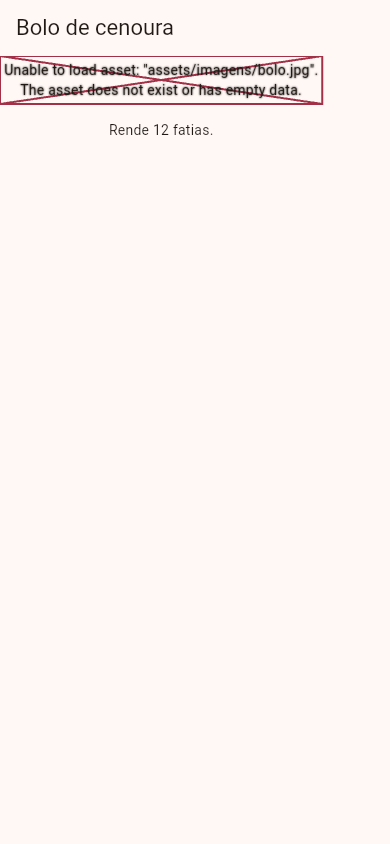
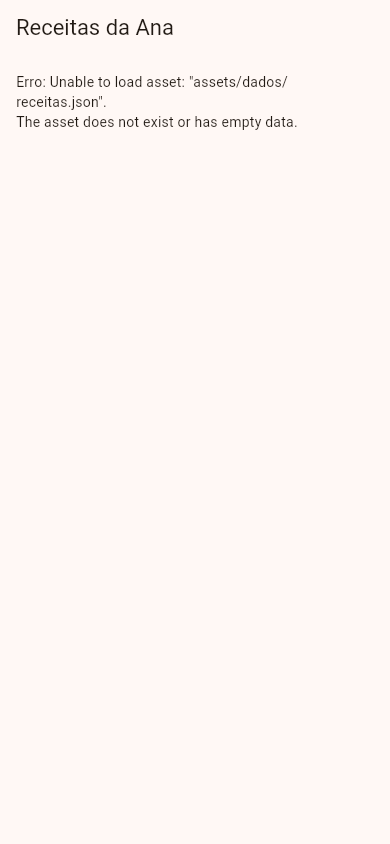

Flutter Assets
A Ana tirou uma foto linda do bolo de cenoura e quer que ela apareça no app, mesmo sem internet. Também quer guardar a lista das receitas num arquivo de texto, em vez de escrever tudo dentro do código. Arquivos assim, que viajam dentro do app (imagens, textos, JSON, fontes, sons), se chamam assets (em inglês, "bens", "recursos"). Esta aula mostra como colocá-los no projeto, como avisar o Flutter de que eles existem e como usá-los no código.
- Onde guardar os arquivos e como declará-los na seção
assets:dopubspec.yaml. - A mostrar uma imagem do app com
Image.asset(e comAssetImage, num fundo). - A ler um arquivo de texto ou JSON com
rootBundle.loadString. - A ter versões da imagem para telas de densidades diferentes (
2.0x,3.0x). - A ver o que vai, de fato, dentro do pacote do app (
AssetManifest). - Os erros reais: o
Unable to load assete o arquivo que existe mas não foi declarado.
Esta aula usa o Flutter 3.47. Atenção: o editor do guia (o DartPad, aula O Editor do Guia) e o laboratório de fotos compilam um arquivo só, sem pasta assets/. Por isso as fotos desta aula mostram o que o laboratório consegue mostrar de verdade: o que acontece quando o asset não está lá, e o que vai dentro de um app sem assets seus. Para ver a sua foto na tela, rode os exemplos num projeto seu (aula Criando um Projeto).
A ideia: a marmita da Ana
Quando a Ana vai trabalhar, ela leva a marmita pronta: o que está lá dentro vai com ela, e ela não depende de achar um restaurante. Mas, para a marmita sair de casa, alguém precisa colocar a comida dentro e fechar a tampa antes de sair. O que ficou na geladeira não vai junto.
| Na marmita | No Flutter |
|---|---|
| A comida na geladeira | O arquivo na pasta do projeto (assets/imagens/bolo.jpg) |
| A lista do que vai na marmita | A seção assets: do pubspec.yaml |
| Fechar a marmita | Compilar o app (flutter run, flutter build): os arquivos da lista são empacotados |
| Abrir a marmita no trabalho | Image.asset(...), rootBundle.loadString(...) |
| O que ficou na geladeira | Um arquivo que está na pasta mas não está na lista: não vai para o app |
1. A pasta e o pubspec.yaml
Primeiro, os arquivos. O costume é uma pasta assets/ na raiz do projeto (ao lado da lib/), com subpastas por tipo:
receitas_da_ana/ ├─ lib/ │ └─ main.dart ├─ assets/ │ ├─ imagens/ │ │ ├─ bolo.jpg │ │ └─ coxinha.jpg │ └─ dados/ │ └─ receitas.json └─ pubspec.yaml
Depois, a lista: dentro da seção flutter: do pubspec.yaml, uma seção assets:. Dá para listar arquivo por arquivo ou a pasta inteira:
flutter:
uses-material-design: true
assets:
- assets/imagens/
- assets/dados/receitas.json
- assets:
- A lista do que vai dentro do app. Fica dentro de
flutter:, com dois espaços de recuo (o YAML é exigente com os espaços; veja a aula Fontes Personalizadas). - - assets/imagens/
- Com a barra no fim, é a pasta: todos os arquivos que estão diretamente nela entram. As subpastas não entram sozinhas: cada subpasta precisa da sua própria linha.
- - assets/dados/receitas.json
- Um arquivo só, pelo caminho a partir da raiz do projeto.
Depois de mexer no pubspec.yaml, pare o app e rode de novo: a recarga a quente não empacota arquivos novos.
Nada obriga a pasta a se chamar assets: o que vale é o caminho escrito no pubspec.yaml. Mas quase todo projeto Flutter usa assets/, e seguir o costume deixa o projeto fácil de entender para os outros (e para você, daqui a seis meses).
2. Mostrando uma imagem: Image.asset
import 'package:flutter/material.dart';
void main() => runApp(const ReceitasApp());
class ReceitasApp extends StatelessWidget {
const ReceitasApp({super.key});
@override
Widget build(BuildContext context) {
return MaterialApp(
debugShowCheckedModeBanner: false,
theme: ThemeData(colorSchemeSeed: Colors.orange),
home: Scaffold(
appBar: AppBar(title: const Text('Bolo de cenoura')),
body: Column(
children: [
Image.asset('assets/imagens/bolo.jpg', height: 200),
const Padding(
padding: EdgeInsets.all(16),
child: Text('Rende 12 fatias.'),
),
],
),
),
);
}
}
- Image.asset('assets/imagens/bolo.jpg')
- Uma imagem que vem de dentro do app. O texto é o mesmo caminho do arquivo no projeto, com as mesmas maiúsculas e minúsculas, sempre com
/(mesmo no Windows). - height: 200
- A altura na tela. Os outros parâmetros (
width,fit…) são os mesmos doImage.networkda aula Imagens.
Num projeto com o bolo.jpg no lugar e declarado no pubspec.yaml, a foto aparece no alto da tela, com 200 pixels lógicos de altura, e o texto embaixo. No laboratório do guia, onde o arquivo não existe, o mesmo código mostra o que acontece quando o asset falta; a foto e a mensagem estão em Quando dá errado.
A imagem como fundo: AssetImage
Onde o Flutter pede um ImageProvider (um "fornecedor de imagem"), como o fundo de uma caixa ou a foto de um CircleAvatar, use o AssetImage com o mesmo caminho:
Container(
height: 160,
decoration: const BoxDecoration(
image: DecorationImage(
image: AssetImage('assets/imagens/bolo.jpg'),
fit: BoxFit.cover,
),
),
child: const Center(child: Text('Bolo de cenoura')),
)
Na verdade, o Image.asset(caminho) é um atalho para Image(image: AssetImage(caminho)).
Missão: o DartPad não tem a pasta assets/, então esta imagem falta de verdade. Acrescente ao Image.asset um errorBuilder que mostre um ícone de bolo no lugar: errorBuilder: (context, erro, pilha) => const Icon(Icons.cake, size: 120). Rode e veja o ícone aparecer em vez do erro.
import 'package:flutter/material.dart';
void main() => runApp(const ReceitasApp());
class ReceitasApp extends StatelessWidget {
const ReceitasApp({super.key});
@override
Widget build(BuildContext context) {
return MaterialApp(
debugShowCheckedModeBanner: false,
theme: ThemeData(colorSchemeSeed: Colors.orange),
home: Scaffold(
appBar: AppBar(title: const Text('Bolo de cenoura')),
body: Column(
children: [
Image.asset('assets/imagens/bolo.jpg', height: 200),
const Padding(
padding: EdgeInsets.all(16),
child: Text('Rende 12 fatias.'),
),
],
),
),
);
}
}
import 'package:flutter/material.dart';
void main() => runApp(const ReceitasApp());
class ReceitasApp extends StatelessWidget {
const ReceitasApp({super.key});
@override
Widget build(BuildContext context) {
return MaterialApp(
debugShowCheckedModeBanner: false,
theme: ThemeData(colorSchemeSeed: Colors.orange),
home: Scaffold(
appBar: AppBar(title: const Text('Bolo de cenoura')),
body: Column(
children: [
Image.asset(
'assets/imagens/bolo.jpg',
height: 200,
errorBuilder: (context, erro, pilha) =>
const Icon(Icons.cake, size: 120),
),
const Padding(
padding: EdgeInsets.all(16),
child: Text('Rende 12 fatias.'),
),
],
),
),
);
}
}
- errorBuilder: (context, erro, pilha) => ...
- O que desenhar se a imagem não puder ser carregada: recebe o
context, o erro e a pilha (o "rastro" de onde ele aconteceu). Num app de verdade, é a rede de segurança para um arquivo que sumiu ou veio corrompido.
3. Textos e JSON: rootBundle.loadString
Para ler um arquivo de texto do app, use o rootBundle (o "pacote raiz": o conjunto de assets do app), que vem do package:flutter/services.dart. A leitura é assíncrona: ela devolve um Future<String>, e a tela usa um FutureBuilder para esperar:
["Bolo de cenoura", "Coxinha", "Suco de maracujá"]
import 'dart:convert';
import 'package:flutter/material.dart';
import 'package:flutter/services.dart';
void main() => runApp(const ReceitasApp());
Future<List<String>> carregarReceitas() async {
final texto = await rootBundle.loadString('assets/dados/receitas.json');
final lista = jsonDecode(texto) as List;
return lista.cast<String>();
}
class ReceitasApp extends StatelessWidget {
const ReceitasApp({super.key});
@override
Widget build(BuildContext context) {
return MaterialApp(
debugShowCheckedModeBanner: false,
theme: ThemeData(colorSchemeSeed: Colors.orange),
home: Scaffold(
appBar: AppBar(title: const Text('Receitas da Ana')),
body: FutureBuilder<List<String>>(
future: carregarReceitas(),
builder: (context, snapshot) {
if (snapshot.hasError) {
return Text('Erro: ${snapshot.error}');
}
if (!snapshot.hasData) {
return const Center(child: CircularProgressIndicator());
}
return ListView(
children: [
for (final r in snapshot.data!) ListTile(title: Text(r)),
],
);
},
),
),
);
}
}
- rootBundle.loadString('assets/dados/receitas.json')
- Lê o arquivo inteiro como texto. O caminho é o mesmo do
pubspec.yaml. - await
- Espera a leitura terminar (ela é rápida, mas não instantânea). O
async/awaité o mesmo do Dart (aula O Dart que Você Precisa). - jsonDecode(texto) as List
- Transforma o texto JSON numa lista do Dart (o
jsonDecodevem dodart:convert; aula JSON). - FutureBuilder
- Desenha a tela conforme o estado do
Future: carregando (a rodinha), com erro, ou com os dados (aula FutureBuilder).
Com o arquivo no lugar, a tela mostra uma lista com "Bolo de cenoura", "Coxinha" e "Suco de maracujá". Sem o arquivo, o snapshot.hasError entra em ação; a mensagem real está em Quando dá errado.
4. Imagens para cada tela: 2.0x e 3.0x
Os celulares têm telas de densidades diferentes: num aparelho comum, cada "pixel lógico" do Flutter vira 2 ou 3 pontinhos de verdade na tela. Uma foto pequena, esticada numa tela densa, fica borrada. Para isso, o Flutter aceita versões da mesma imagem em subpastas com a densidade no nome:
assets/imagens/
├─ icone-bolo.png « 100 × 100 pontinhos (densidade 1)
├─ 2.0x/
│ └─ icone-bolo.png « 200 × 200
└─ 3.0x/
└─ icone-bolo.png « 300 × 300
No código e no pubspec.yaml, nada muda: você declara e usa só assets/imagens/icone-bolo.png, e o Flutter escolhe sozinho a versão que combina com a tela do aparelho. Com width: 100, a imagem ocupa sempre 100 pixels lógicos; só a nitidez muda.
5. O que vai dentro do app
Mesmo sem nenhum asset seu, o app já leva alguns arquivos. O AssetManifest (o "manifesto de assets", a lista que o Flutter monta ao compilar) diz quais são. O app abaixo, rodado no laboratório, lista tudo:
import 'package:flutter/material.dart';
import 'package:flutter/services.dart';
void main() => runApp(const ListaApp());
class ListaApp extends StatelessWidget {
const ListaApp({super.key});
@override
Widget build(BuildContext context) {
return MaterialApp(
debugShowCheckedModeBanner: false,
theme: ThemeData(colorSchemeSeed: Colors.orange),
home: Scaffold(
appBar: AppBar(title: const Text('O que tem no pacote do app')),
body: FutureBuilder<AssetManifest>(
future: AssetManifest.loadFromAssetBundle(rootBundle),
builder: (context, snapshot) {
if (!snapshot.hasData) {
return const Center(child: CircularProgressIndicator());
}
final arquivos = snapshot.data!.listAssets();
return ListView(
children: [
for (final a in arquivos) ListTile(title: Text(a)),
],
);
},
),
),
);
}
}
Um item só: packages/cupertino_icons/assets/CupertinoIcons.ttf, a fonte dos ícones no estilo iPhone, que vem do pacote cupertino_icons que o flutter create já põe no pubspec.yaml. Repare no começo do caminho: assets de pacotes ficam em packages/NOME_DO_PACOTE/. Quando a Ana declarar os dela, eles aparecem nesta lista com o caminho que ela escreveu (assets/imagens/bolo.jpg…). É um jeito rápido de conferir se um asset foi mesmo para dentro do app.
Formas diferentes de fazer
| Jeito | Quando usar |
|---|---|
Image.asset('assets/…') | Imagens fixas do app: logotipo, ilustrações, fotos que não mudam. Funcionam sem internet e aparecem na hora |
Image.network('https://…') | Imagens que mudam ou que são muitas (as fotos das receitas de todos os usuários): não aumentam o tamanho do app, mas precisam de internet (aula Imagens) |
Image.file(File(…)) | Imagens que o próprio usuário criou no aparelho (uma foto que a Ana tirou com o app); não funciona na web |
rootBundle.loadString | Textos e JSON fixos do app (a lista inicial de receitas, um texto de ajuda) |
Uma pasta inteira no pubspec.yaml (- assets/imagens/) | Quando há muitos arquivos; lembre-se de que as subpastas precisam de linha própria |
Tudo o que está na lista assets: aumenta o tamanho do app que as pessoas baixam. Antes de pôr uma foto de 5 MB, reduza-a para o tamanho em que ela aparece na tela (uma foto de 1080 pixels de largura já é nítida num celular) e prefira JPG para fotos e PNG para desenhos com fundo transparente.
Quando dá errado
Unable to load asset
A Ana usou Image.asset('assets/imagens/bolo.jpg') (o app da seção 2), mas o arquivo não foi para dentro do app: ele não existe, ou existe na pasta mas não está no pubspec.yaml, ou o app não foi reiniciado depois de mudar o pubspec.yaml. No laboratório, onde o arquivo não existe, a tela ficou assim:

E o console:
Failed to load resource: the server responded with a status of 404 (Not Found) Error while trying to load an asset: Flutter Web engine failed to fetch "assets/assets/imagens/bolo.jpg". HTTP request succeeded, but the server responded with HTTP status 404. ══╡ EXCEPTION CAUGHT BY IMAGE RESOURCE SERVICE ╞════════════════════════════════════════════════════ The following assertion was thrown resolving an image codec: Unable to load asset: "assets/imagens/bolo.jpg". The asset does not exist or has empty data. When the exception was thrown, this was the stack: « … as linhas da pilha Image provider: AssetImage(bundle: null, name: "assets/imagens/bolo.jpg") Image key: AssetBundleImageKey(bundle: PlatformAssetBundle#b7e4c(), name: "assets/imagens/bolo.jpg", scale: 1) ════════════════════════════════════════════════════════════════════════════════════════════════════
- Failed to load resource … 404 / Flutter Web engine failed to fetch "assets/assets/imagens/bolo.jpg"
- As duas primeiras linhas são da versão web (o laboratório roda o app num navegador): o app pediu o arquivo ao servidor e ouviu "404, não encontrado". O
assets/repetido não é erro seu: na web, o Flutter guarda os assets numa pastaassets/do site, e o seu caminho (que também começa comassets/) vai dentro dela. Num celular, essas duas linhas não aparecem. - EXCEPTION CAUGHT BY IMAGE RESOURCE SERVICE
- O erro veio do "serviço de imagens", a parte do Flutter que carrega e decodifica imagens.
- Unable to load asset: "assets/imagens/bolo.jpg". The asset does not exist or has empty data.
- "Não foi possível carregar o asset. Ele não existe ou está vazio." É a mensagem que importa, com o caminho exato que o código pediu: compare letra por letra com o nome do arquivo e com o
pubspec.yaml. - Image provider: AssetImage(…)
- Quem pediu a imagem: um
AssetImage(oImage.assetcria um por dentro, como na seção 2).
Repare que o resto da tela continuou funcionando: o "Rende 12 fatias." apareceu normalmente. Uma imagem que falta não derruba o app; ela só some (no modo de lançamento, o release, a caixa com o X nem aparece: fica um espaço vazio).
Como consertar: confira, nesta ordem: (1) o arquivo está na pasta, com o nome exatamente igual (maiúsculas, extensão .jpg × .jpeg); (2) o caminho, ou a pasta com a barra no fim, está na lista assets: do pubspec.yaml, com o recuo certo; (3) você parou o app e rodou de novo.
O mesmo problema com o rootBundle.loadString: o Future termina com erro, e o FutureBuilder mostra o snapshot.error. No laboratório, sem o receitas.json:

FutureBuilder mostrando o snapshot.error.A mesma mensagem, Unable to load asset: "assets/dados/receitas.json"., agora dentro do texto que o próprio app montou com Erro: ${snapshot.error}. No console do laboratório saíram só as duas linhas do 404 da versão web: como o erro foi entregue ao FutureBuilder, que o tratou e mostrou na tela, o Flutter não o considera um erro "solto". É por isso que vale sempre tratar o snapshot.hasError: sem ele, a rodinha de carregando giraria para sempre.
flutter:
assets:
- assets/imagens/
Com Image.asset('assets/imagens/doces/brigadeiro.jpg'), dá o mesmo Unable to load asset, embora a pasta assets/imagens/ esteja na lista: a linha com a barra no fim inclui só os arquivos que estão direto nela, não os das subpastas. Como consertar: acrescente - assets/imagens/doces/. (As pastas 2.0x e 3.0x da seção 4 são a exceção: o Flutter as procura sozinho.)
Referência rápida
| Escrita | O que faz |
|---|---|
flutter: assets: - assets/imagens/ | Põe no app os arquivos que estão direto na pasta |
flutter: assets: - assets/dados/receitas.json | Põe no app um arquivo |
Image.asset('assets/imagens/bolo.jpg') | Mostra uma imagem do app |
AssetImage('assets/imagens/bolo.jpg') | A mesma imagem como ImageProvider (fundos, CircleAvatar) |
errorBuilder: (context, erro, pilha) => … | O que mostrar se a imagem falhar |
await rootBundle.loadString('assets/…') | Lê um arquivo de texto do app (import 'package:flutter/services.dart') |
assets/imagens/2.0x/x.png, 3.0x/x.png | Versões para telas mais densas; no código, só assets/imagens/x.png |
AssetManifest.loadFromAssetBundle(rootBundle) | A lista dos assets que foram para dentro do app |
Exercícios
1. A lista do pubspec
Complete o nome da seção do pubspec.yaml que lista os arquivos do app:
:
- assets/imagens/
2. A imagem
Complete o construtor que mostra uma imagem de dentro do app:
3. O texto
Complete o objeto que lê arquivos de texto do app:
4. O pubspec.yaml tem - assets/imagens/. Qual destes arquivos não vai para o app?
5. A Ana acrescentou uma imagem nova no pubspec.yaml e apertou só a recarga a quente. O que acontece?
6. Com assets/imagens/2.0x/logo.png e assets/imagens/logo.png, o que a Ana escreve no código?
Missão final: o fundo da receita
Missão: ponha a foto assets/imagens/bolo.jpg como fundo do cartão, com image: DecorationImage(image: AssetImage('assets/imagens/bolo.jpg'), fit: BoxFit.cover) dentro do BoxDecoration. No DartPad o arquivo não existe, então o fundo fica só na cor no seu projeto, com o asset declarado, a foto aparece.
import 'package:flutter/material.dart';
void main() => runApp(const ReceitasApp());
class ReceitasApp extends StatelessWidget {
const ReceitasApp({super.key});
@override
Widget build(BuildContext context) {
return MaterialApp(
debugShowCheckedModeBanner: false,
theme: ThemeData(colorSchemeSeed: Colors.orange),
home: Scaffold(
appBar: AppBar(title: const Text('Receitas da Ana')),
body: Container(
height: 160,
margin: const EdgeInsets.all(16),
decoration: BoxDecoration(
color: Colors.orange.shade100,
borderRadius: BorderRadius.circular(16),
),
child: const Center(child: Text('Bolo de cenoura')),
),
),
);
}
}
import 'package:flutter/material.dart';
void main() => runApp(const ReceitasApp());
class ReceitasApp extends StatelessWidget {
const ReceitasApp({super.key});
@override
Widget build(BuildContext context) {
return MaterialApp(
debugShowCheckedModeBanner: false,
theme: ThemeData(colorSchemeSeed: Colors.orange),
home: Scaffold(
appBar: AppBar(title: const Text('Receitas da Ana')),
body: Container(
height: 160,
margin: const EdgeInsets.all(16),
decoration: BoxDecoration(
color: Colors.orange.shade100,
borderRadius: BorderRadius.circular(16),
image: const DecorationImage(
image: AssetImage('assets/imagens/bolo.jpg'),
fit: BoxFit.cover,
),
),
child: const Center(child: Text('Bolo de cenoura')),
),
),
);
}
}
Resumo
- Assets são arquivos que vão dentro do app: imagens, textos, JSON, fontes, sons.
- Guarde em
assets/e liste na seçãoflutter: assets:dopubspec.yaml(um arquivo, ou a pasta com a barra no fim; subpastas precisam de linha própria). Depois, pare e rode o app de novo. - Imagem:
Image.asset('caminho'), ouAssetImage('caminho')onde o Flutter pede umImageProvider;errorBuilderpara quando ela faltar. - Texto:
await rootBundle.loadString('caminho'), comFutureBuilderna tela. - Versões
2.0x/e3.0x/deixam a imagem nítida em telas densas, sem mudar o código. - Arquivo fora do pacote →
Unable to load asset: confira o nome, opubspec.yamle reinicie o app.